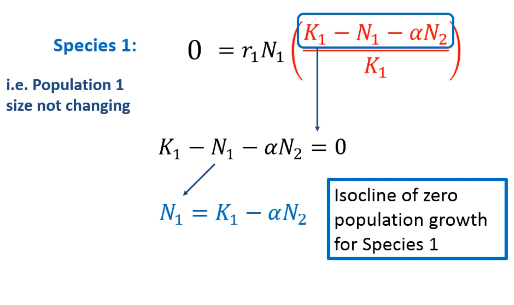
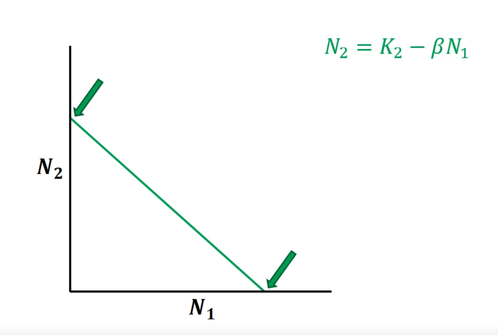

- Competencia interespecífica
- Interacción entre dos o más especies que "luchan" por obtener recursos.
- Considerada por Darwin como el motor principal de la evolución: "la lucha por la existencia" y "la supervivencia de los más aptos"
- Esta idea ha condicionado nuestra comprensón de la naturaleza.
- Hoy sabemos que otras interacciones menos "beligerantes" (mutualismo, comensalismo) son determinantes de la estabilidad de los ecosistemas. La cooperación también es posible en la naturaleza.
- Tipos
- Interferencia
- Explotación
- Efectos
- A escala de individuo, reducción de
- Crecimiento
- Supervivencia
- Reproducción
- A escala de población, cambios en
- Dinámica poblacional
- Distribución de la población.
- Evolución.
- Modelización de la competencia interespecífica. Lotka y Volterra
- Se basa en:
- La ecuación lógistica que ya conocemos
- Coeficiente de competencia
- Cuantificación del efecto de un individuo de una especie sobre otro cuando ambas compiten. Es decir, el efecto per capita de la competencia.
- Un individuo de la especie 1 es igual a los individuos b de la especie 2. Ej. Si b es 5 estamos diciendo que un individuo de la especie 1 equivale a 5 individuos de la especie 2.
- El coeficiente de competencia permite "convertir" la densidad de población de una especie en densidad de población de la otra.
- Significado
- > 1 -> Eres mala competidora. Necesitas muchos individuos de tu especie para competir por recursos con 1 individuo de otra especie.
- = 1 -> Compites en igualdad con la otra especie.
- < 1 -> Eres buena competidora. Un individuo de tu especie equivale a más de un individuo de la otra especie.
- Formulación matemática
- Si N2 o alfa = 0 en (1), la especie 1 crece sin competencia interespecífica, pero con competencia intraespecífica.
- Si alfa o beta son muy altos, la competencia interespecífica tendrá un peso relativo alto en relación con la competencia intraespecífica.
- La velocidad de crecimiento de ambas poblaciones depende de
- La capacidad de carga inherente a la especie: competencia intraespecífica
- La forma en la que compiten entre sí: competencia interespecífica
- Videos útiles para entender mejor lo anterior
- Análisis de los resultados teóricos de la competencia mediante "isoclinas de crecimiento cero"
- Para estudiar cómo compiten dos especies, empecemos por analizar las condiciones en las cuales el crecimiento poblacional se detiene.
- 
- Al anular el crecimiento de la especie 1 obtenemos una recta que es la isoclina de crecimiento cero.
- Si suprimiéramos la competencia interespecífica (alfa · N2) tendríamos el crecimiento logístico con competencia intraespecífica únicamente: N1 = K1 -> la población no crece.
- En el caso de la especie 2 podemos derivar una ecuación lineal similar.
- En definitiva, hay una interacción entre la competencia intraespecífica y la interespecífica. La forma de esta interacción determinará la coexistencia o no de las dos especies.
- Representemos gráficamente las isolíneas
- Especie 1
- Cuando N2 es 0 -> N1 = K1 -> no hay competencia interespecífica y el freno es debido solo a la intraespecífica
- Cuando N1 es 0 -> N2 = K1/alfa == K2.
- Especie 2
- 
- Especie 1 es muy buena competidora (alfa es baja) y su K es alta
- La especie 1 tiene valores altos de K y bajos de alfa (especie 1 muy buena competidora)
- La especie 2 tiene valores bajos de K2 y altos de beta (especie 2 mala competidora)
- K1 > K2/beta y K1/alfa > K2 -> Especie 1 tarda más en frenarse por competencia intraespecífica y compite mucho mejor que especie 2 -> Especie 2 pierde.
- La densidad de la especie 2 no puede frenar (ni siquiera cuando está en K2) el crecimiento de la especie 1
- Hay una superficie en la curva (=combinación de N1 y N2) en los que Especie 1 crece y Especie 2 no.
- La especie 1 gana porque "lleva mejor" la competencia intraespecífica y compite mejor que la especie 2. La especie 1 excluye a la 2. No lo vemos en la naturaleza, porque se han excluido.
- La buena competidora gana: alta capacidad de carga y bajo impacto del rival
- Especie 2 es muy buena competidora (beta es baja) y su K es alta
- La especie 2 tiene valores altos de K y bajos de beta (especie 2 muy buena competidora)
- La especie 1 tiene valores bajos de K y altos de alfa (especie 1 mala competidora)
- K2/beta > K1 y K2 > K1/alfa -> Especie 2 tarda más en frenarse por competencia intraespecífica y compite mucho mejor que especie 1 -> Especie 1 pierde.
- La densidad de especie 1 no puede frenar (ni siquiera cuando está en K1) el crecimiento de la especie 2
- Hay una superficie en la curva (=combinación de N1 y N2) en los que Especie 2 crece y Especie 1 no.
- La especie 2 gana porque "lleva mejor" la competencia intraespecífica y compite mejor que la especie 1. La especie 2 excluye a la 1. No lo vemos en la naturaleza, porque se han excluido.
- La buena competidora gana: alta capacidad de carga y bajo impacto del rival
- Coexistencia inestable
- En ambas especies la componente interespecífica del freno opera antes que la intraespecífica. K > K / coeficiente competencia
- K2 / beta < K1 -> La especie 1 puede alcanzar poblaciones mayores que la 2 y llevarla a la extinción.
- K1 / alfa > K2 -> La especie 2 puede alcanzar poblaciones mayores que la 1 y llevarla a la extinción.
- Que se alcance la coexistencia o la extinción depende de:
- Los tamaños poblacionales iniciales
- La recurrencia de perturbaciones que equilibran la competencia
- Competidores agresivos: ambas especies compiten mejor entre sí que consigo mismas
- Ejemplos
- Percebes que compiten en zonas intermareales
- Una especie crece lento, pero resiste mejor las perturbaciones
- Otra especie crece rápido, pero se desprende de la roca cuando hay mucho oleaje
- Que haya coexistencia o una especie desplace a otra depende de la recurrencia e intensidad de las perturbaciones.
- Peces herbívoros en arrecifes de coral
- Hay coexistencia cuando hay mucho alimento
- Si el alimento escasea o hay muchas perturbaciones, las especies que compiten mejor desplazan a las otras.
- Coexistencia
- En ambas especies la componente intraespecífica del freno (K) opera antes (es menor) que la interespecífica. K < K / coeficiente competencia
- La población de la especie 1 nunca puede alcanzar una densidad suficiente como para eliminar a la 2 y viceversa. N1 no puede ser nunca mayor que K1. N2 no puede ser nunca mayor que K2
- Se alcanza coexistencia cuando la competencia intraespecífica pesa más que la interespecífica. Es decir, cuando los coeficientes de competencia interespecífica son pequeños.
- Malas competidoras, pero buenos gestores de sus propios recursos
- ¿Se cumple este modelo en la realidad?
- Dinámica de competencia en paramecios. Experimentos de Gause (años 30 siglo XX)
- Crecimiento de tres especies por separado
- Crecimiento de especies compitiendo dos a dos

- Una especie extingue a la otra.
- P. aurelia tiene una tasa de crecimiento mayor y tolera mejor la competencia intraespecífica.
-
- Al poner a la especie perdedora de antes con otra especie, resulta que ambas coexisten.
- P. caudatum se alimenta de las bacterias en suspensión de la solución, mientras que P. bursaria se alimenta de las bacterias que hay en el fondo del tubo de ensayo.
- Otros
- Diatomeas (Tilman)
- Escarabajos harineros
- De estos experimentos se deriva el principio de "exclusión competitiva"
- En la naturaleza no existen "competidores completos": dos especies que viven en el mismo sitio y que tienen exactamente las mismas necesidades ecológicas (= el mismo nicho ecológico)
- Nicho (según Hutchinson) es el conjunto de condiciones ambientales que necesita una especie para vivir.
- Es una región del espacio n-dimensional
- Si dos especies tienen el mismo nicho, una termina extinguiéndose.
- En la naturaleza vemos las consecuencias de esa exclusión competitiva
- Factores que "limitan" la competencia o cómo se manifiesta el modelo de Lotka-Volterra en la realidad.
- Factores independientes de los recursos por los que compiten. Ej. plantas que compiten por luz en un cultivo abandonado
- Las plantas compiten fundamentalmente por luz.
- En un campo abandonado llegan semillas de muchas especies.
- Es de esperar que compitan mejor (y ocupen todo el espacio) aquellas que usan mejor la luz y crecen rápido.
- Pero resulta que no es tan así...
- Las plantas tienen temperaturas óptimas de germinación diferentes. Y eso genera un "cocktel" de combinaciones de frecuencias de germinación que limita la competencia.
- La variación temporal del ambiente también "modula" la competencia
- Variaciones anuales de abundancia de especies en las praderas de Sudáfrica.
- Se alternan dos especies en abundancia: Urochloas mosambicensis vs. Heteropogon contortus.
- Esto es el resultado de variaciones anuales en las precipitaciones.
- Cuando llueve poco, Urochloa mantiene tasas de supervivencia y crecimiento mayores.
- cuando llueve mucho Heteropogon se convierte en dominante.
- Capacidad de colonización vs. capacidad de competencia.
- Efecto fundador: el que primero llega tiene ventaja.
-
- Ambiente simple y homogéneo
- Muchas especies se "alimentan" de lo mismo.
- Sin embargo hay mucha diversidad.
- La explicación parece ser que los factores ecológicos y ambientales interactúan continuamente, de manera que el hábitat del plácton nunca llega a un equilibrio para que una sola especie se vea favorecida.